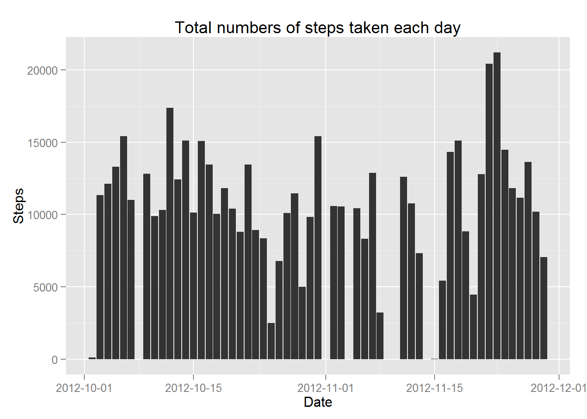
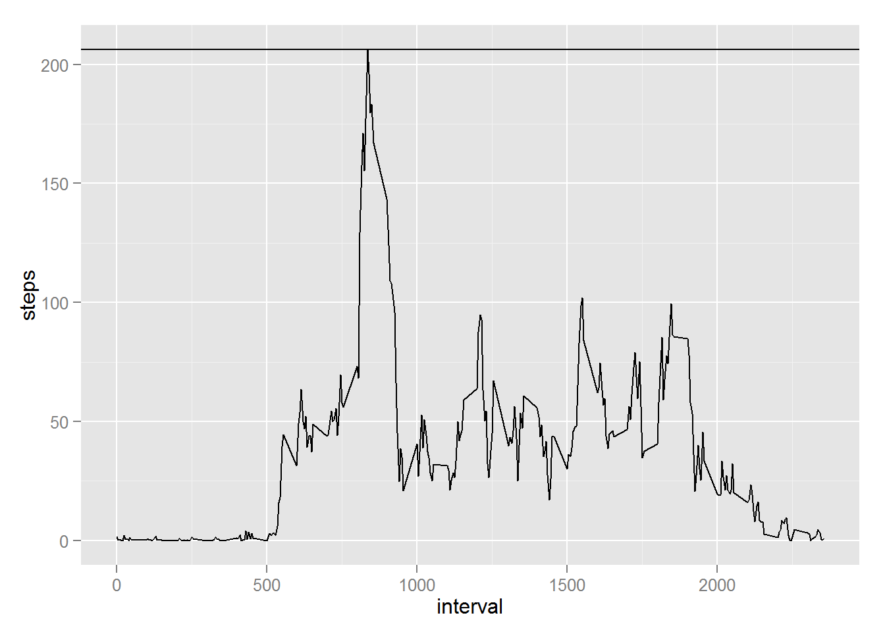
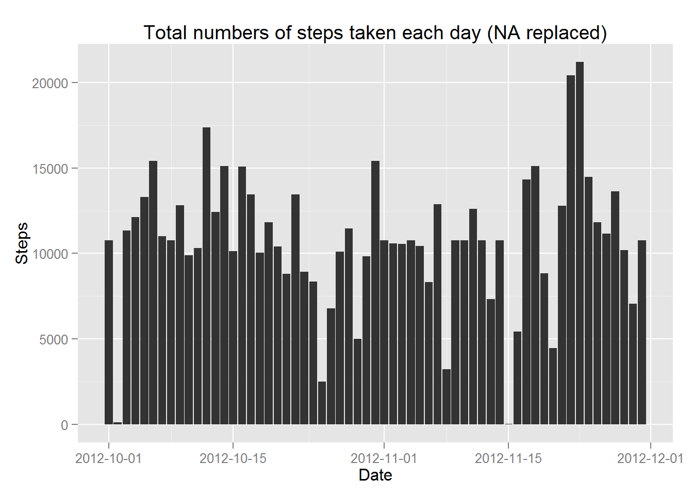
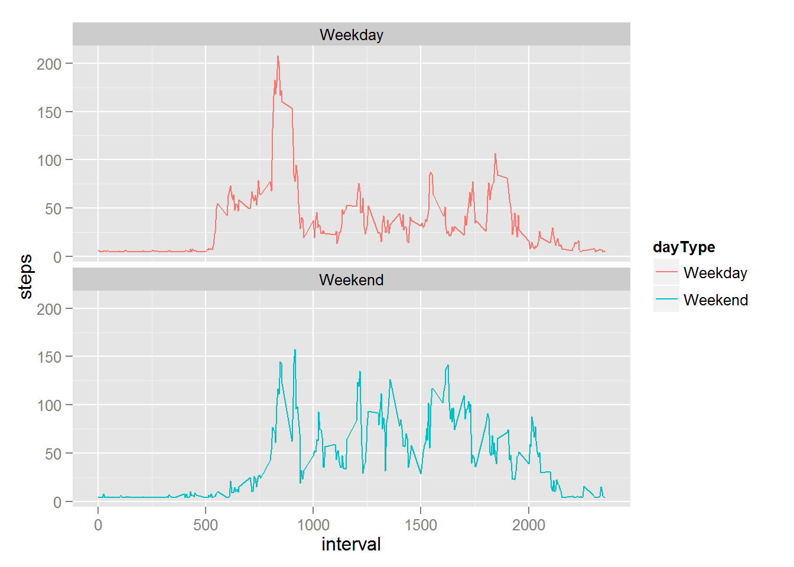

library(knitr)## Warning: package 'knitr' was built under R version 3.1.3 library(ggplot2)## Warning: package 'ggplot2' was built under R version 3.1.3 library(scales)## Warning: package 'scales' was built under R version 3.1.3 setwd("./RepData_PeerAssessment1/")
opts_chunk$set(echo=TRUE) if (!file.exists("activity.zip")){
download.file("http://d396qusza40orc.cloudfront.net/repdata%2Fdata%2Factivity.zip", destfile = "activity.zip", mode="wb")
} if (!file.exists("activity.csv")){
unzip("activity.zip")
} data <- read.csv("activity.csv")
summary(data)## steps date interval
## Min. : 0.00 2012-10-01: 288 Min. : 0.0
## 1st Qu.: 0.00 2012-10-02: 288 1st Qu.: 588.8
## Median : 0.00 2012-10-03: 288 Median :1177.5
## Mean : 37.38 2012-10-04: 288 Mean :1177.5
## 3rd Qu.: 12.00 2012-10-05: 288 3rd Qu.:1766.2
## Max. :806.00 2012-10-06: 288 Max. :2355.0
## NA's :2304 (Other) :15840 totalSum <- aggregate(steps ~ date, data, sum)
head(totalSum)## date steps
## 1 2012-10-02 126
## 2 2012-10-03 11352
## 3 2012-10-04 12116
## 4 2012-10-05 13294
## 5 2012-10-06 15420
## 6 2012-10-07 11015 ggplot(data, aes(y=steps, x=as.Date(date))) +
geom_histogram(stat = "identity") +
scale_x_date(labels = date_format("%Y-%m-%d")) +
xlab("Date") +
ylab("Steps") +
ggtitle("Total numbers of steps taken each day")## Warning: Removed 2304 rows containing missing values (position_stack).
meanData <- mean(totalSum$steps,na.rm = TRUE)
medianData <- median(totalSum$steps,na.rm=TRUE) TotalAvg <- aggregate(steps ~ interval, data, mean)
ggplot(TotalAvg, aes(interval,steps)) +
geom_line() +
geom_hline(yintercept = max(TotalAvg$steps))
TotalAvg[TotalAvg$steps == max(TotalAvg$steps),]## interval steps
## 104 835 206.1698 nrow(data[is.na(data$steps),])## [1] 2304Devise a strategy for filling in all of the missing values in the dataset. The strategy does not need to be sophisticated. For example, you could use the mean/median for that day, or the mean for that 5-minute interval, etc.
Create a new dataset that is equal to the original dataset but with the missing data filled in.
dataNew <- data
dataNew$steps[is.na(dataNew$steps)] <- mean(TotalAvg$steps)4.1 Make a histogram of the total number of steps taken each day and Calculate and report the mean and median total number of steps taken per day.
totalSumNew <- aggregate(steps ~ date, dataNew, sum)
ggplot(dataNew, aes(y=steps, x=as.Date(date))) +
geom_histogram(stat = "identity") +
scale_x_date(labels = date_format("%Y-%m-%d")) +
xlab("Date") +
ylab("Steps") +
ggtitle("Total numbers of steps taken each day (NA replaced)")
meanDataNew <- mean(totalSumNew$steps)
medianDataNew <- median(totalSumNew$steps,na.rm=TRUE)4.2 Do these values differ from the estimates from the first part of the assignment?
* Mean is 1.0766189\times 10^{4}.
* Mean(NA replaced) is 1.0766189\times 10^{4}.
+ This is same for mean.
* Median is 10765.
* Median(NA replaced) is 1.0766189\times 10^{4}.
+ Yes there is minor differences since more mean data has been populated which move the median towards mean.4.3 What is the impact of imputing missing data on the estimates of the total daily number of steps? * Depends on the value being populated to fill the NAs, mean and median maybe tweak slightly.
dataNewWeek <- dataNew
dataNewWeek$dayType <- "Weekday"
weekend <- weekdays(as.Date(dataNewWeek$date)) %in% c("Saturday","Sunday")
dataNewWeek$dayType[weekend == TRUE] <- "Weekend"
dataNewWeek$dayType <- as.factor(dataNewWeek$dayType)
summary(dataNewWeek)## steps date interval dayType
## Min. : 0.00 2012-10-01: 288 Min. : 0.0 Weekday:12960
## 1st Qu.: 0.00 2012-10-02: 288 1st Qu.: 588.8 Weekend: 4608
## Median : 0.00 2012-10-03: 288 Median :1177.5
## Mean : 37.38 2012-10-04: 288 Mean :1177.5
## 3rd Qu.: 37.38 2012-10-05: 288 3rd Qu.:1766.2
## Max. :806.00 2012-10-06: 288 Max. :2355.0
## (Other) :15840 TotalAvgNewWeek <- aggregate(steps ~ interval + dayType, dataNewWeek, mean)
ggplot(TotalAvgNewWeek, aes(x=interval,y=steps,group=dayType)) +
geom_line(aes(color=dayType)) +
facet_wrap(~ dayType, nrow=2)